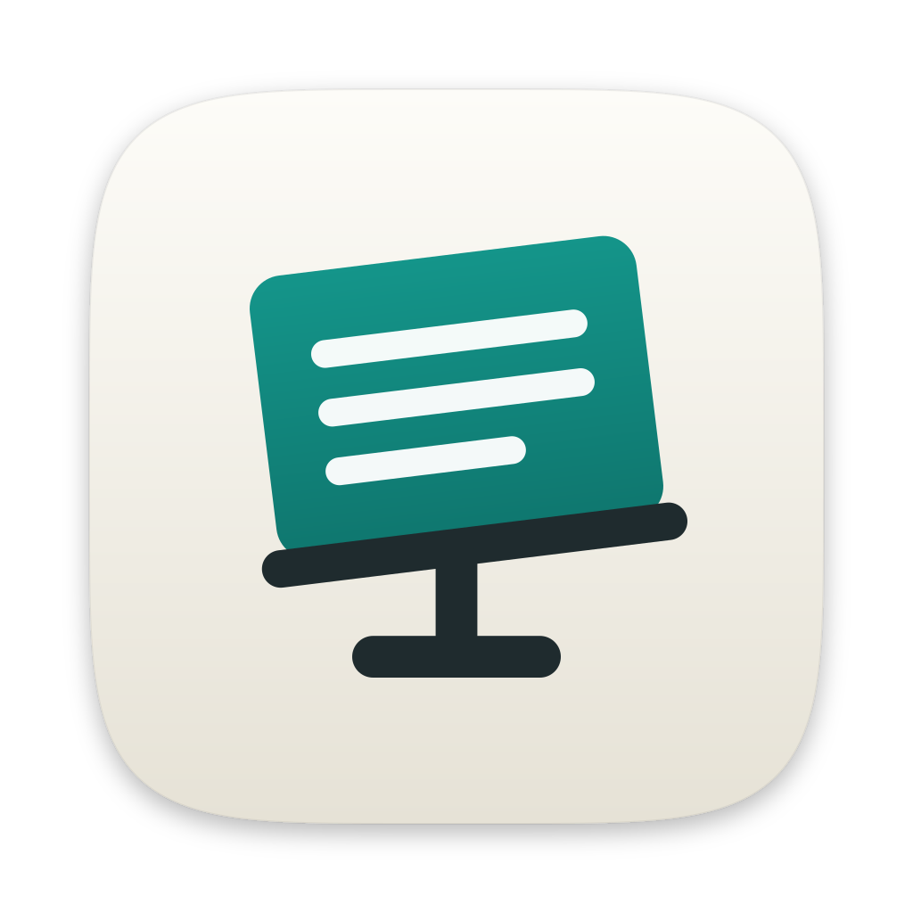

Il programma per i PDF libero e gratuito: leggi, commenta, modifica, firma, proteggi e converti i tuoi documenti. Senza abbonamento, senza account, senza pubblicità. I tuoi file restano sul tuo computer.
Versione più recente su GitHub.

Leggio è giovane e cresce a ogni versione: alcune funzioni arrivano negli aggiornamenti, che l'app ti segnala da sola.
Più documenti in schede, ricerca nel testo, segnalibri, miniature, modalità lettura.
Evidenzia, sottolinea, aggiungi note e disegni a mano libera.
Unisci, dividi, ruota, riordina ed elimina pagine con un trascinamento.
Moduli compilabili, firma grafica e firma digitale con certificato.
Password, permessi e oscuramento definitivo delle informazioni riservate.
Da immagini a PDF, da PDF a Word, e testo ricercabile nelle scansioni (OCR).
Leggio funziona senza Internet e non invia mai i tuoi documenti da nessuna parte. L'unico collegamento è un controllo, una volta al giorno, per sapere se esiste una versione nuova: una richiesta anonima a GitHub, che puoi disattivare nelle impostazioni. Nessuna telemetria.